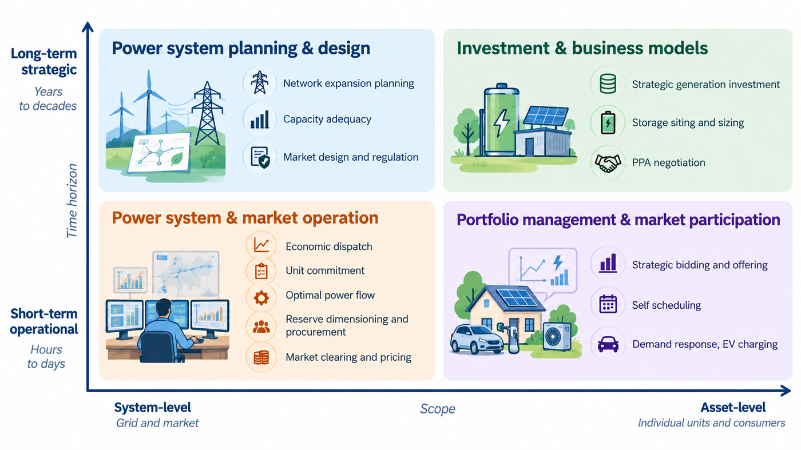
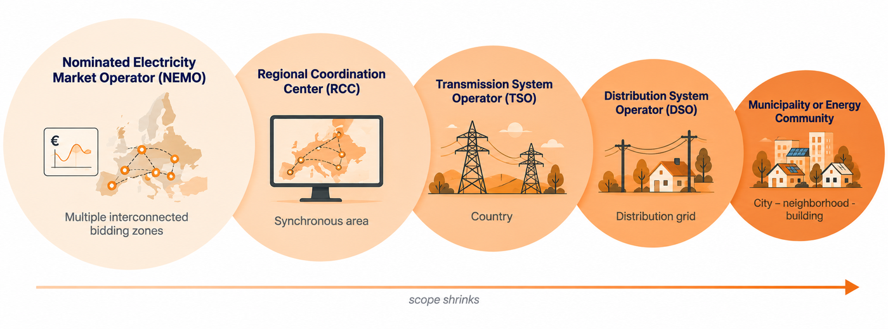
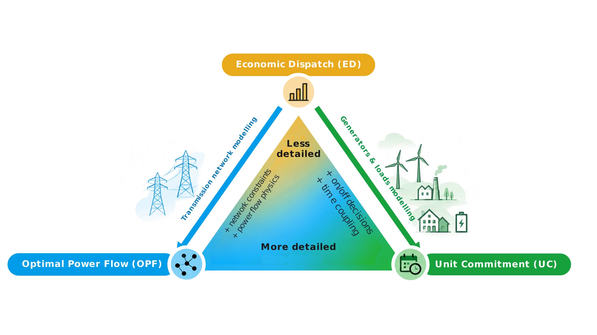
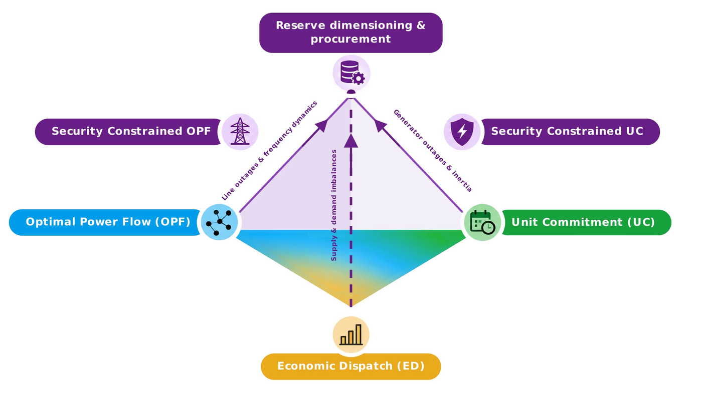
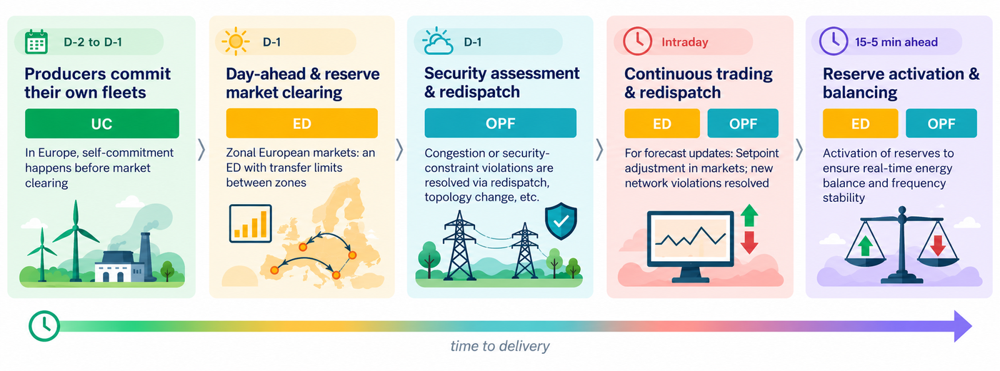

1Where these decisions sit
Every decision problem in this course can be placed on two axes: the time horizon over which the decision binds, and the scope of the decision-maker taking it. Those two axes cut the field into four families. Today's problems all sit in one of them — short-term, system-level decisions taken by a social-welfare-maximising central agent, acting on behalf of everyone connected to the system.

The two axes and the four families of decision problems. Economic dispatch, unit commitment and optimal power flow sit in the short-term, system-level cell.
The decision-maker: A central operator
Throughout this lecture the decision-maker is a central operator: any decision-maker who (a) coordinates the resources across a system, (b) is responsible for the safe operation of the system it covers, and (c) acts in the interest of everyone connected to the system — maximising social welfare rather than its own profit.
This is deliberately broader than "system operator". The scope changes enormously from one such agent to the next, but the structure of the optimization problem does not.

The same problem structure at five different scopes. The objective and the constraints keep their form; only the boundary of the system moves.
A DSO maximises welfare over its own grid, yet from the TSO's perspective that same DSO is a single participant. An energy community manager maximises welfare inside the community and behaves self-interestedly outside it. The formulations below transfer to these agents unchanged; the interpretation of the objective does not. The prosumer in Assignment 1 and the self-committing producer later in this lecture sit in the neighbouring cell of the grid above — same mathematics, different reading of what "optimal" means.
2Three questions, three problems
"How should we operate the power system?" is too large a question for any single agent to answer alone. It splits into three narrower ones, each of which must be answered before a single MWh flows, and each of which can be solved by a different optimization model — and, in practice, often by a different agent.
Which generators should be committed?
Some plants take hours to start; someone has to decide in advance which ones to turn on, so enough capacity is available when it is needed.
How to match supply and demand?
Generators and loads value energy differently; someone has to decide who produces and who consumes, so the trades are worth as much as possible.
How to deliver power from the generators to the loads?
Power follows physical laws; someone has to ensure the traded quantities can be delivered without pushing the network past its limits.
Side-by-side comparison
| Economic Dispatch (ED) | Unit Commitment (UC) | Optimal Power Flow (OPF) | |
|---|---|---|---|
| The question it answers | How much should each online unit produce, and each flexible load consume? | Which units should be on, and when? | Can the resulting flows be delivered? |
| Key decisions | Production and consumption setpoints | On/off status of each unit, in each period | Nodal injections, network states, and the flows they cause |
| Key constraints | One system-wide balance of production and consumption | Minimum output, minimum up/down times, ramps | Nodal balances, line limits, power flow physics |
| Model class | LP, or quadratic (convex) problem | MILP | LP if DC-linearised; non-convex if AC |
| Typical horizon | 15 min to 24 h, solved day-ahead to 15 min ahead | 24–168 h, solved day-ahead | Same horizon as the problem it is added to |
| What it assumes | Units are on; delivery is someone else's job | Delivery is someone else's job | Units are on (unless combined with UC) |
Two main levels of modelling complexity
ED is the simplest of the three, and both of the others are reached by refusing one of its two simplifications. Add techno-economic detail about the units — on/off decisions, time coupling — and ED becomes UC. Add detail about the network infrastructure — nodal balances, network constraints, power flow physics — and ED becomes OPF. The triangle below is the map for the rest of the lecture.

Neither direction accounts for what happens when a generator trips, a line is lost, or the wind forecast is wrong. Adding uncertainty raises a third axis out of the plane of the triangle — reserve dimensioning and procurement, security-constrained OPF and UC — which is treated in the companion note on extensions beyond ED and DC-OPF, and in the stochastic programming weeks.

The third level of complexity. Line outages and frequency dynamics lift OPF towards security-constrained OPF; generator outages and inertia lift UC towards security-constrained UC; supply and demand imbalances lift ED towards reserve dimensioning and procurement.
3The same three questions, asked again and again
These are not three models used by three different people. They are three questions revisited throughout the operating day, at finer and finer resolution, as the uncertainty that made the early answers provisional resolves.

One operating day in a European zonal market. The same three questions are re-asked at each stage as delivery approaches.
Two things are worth extracting from this timeline. First, the rolling-horizon structure: each stage takes the previous stage's answer as its starting point and corrects it with better information. Second, and less obviously, the allocation of these problems to actors is institutional, not physical. In a nodal US market the operator solves UC and OPF together before the market clears. In zonal Europe, producers commit themselves, the market clears on a crude representation of the network, and the TSO repairs the result afterwards through redispatch. Same physics, different division of labour.
It is standard to say that ED "neglects" unit characteristics and the network, which makes it sound like a defect. It is more useful to read those assumptions as delegation: ED assumes someone else has answered the commitment question and someone else will make the flows work. That is literally how the European arrangement is organised. Read this way, UC and OPF stop being arbitrary complications and become the two ways of saying "stop delegating question X".
4Economic dispatch
Economic dispatch matches production and consumption at the greatest total value, given that the units are already committed and that someone else is responsible for delivery.
The two assumptions, stated explicitly
Someone else is assumed to make the flows work. One system-wide balance stands in for a network, so location does not exist and there is one price.
Units are assumed to have committed themselves and reported their hourly power limits. No inter-temporal dependencies. Costs and utilities are linear.
What the model contains
| Decisions | Setpoint (dispatch) of every online generator and flexible load (continuous) |
| Input (given) | Marginal cost/utility and power limits of committed generators and flexible loads; consumption of inflexible loads |
| Objective | Maximise social welfare = total utility of consumption minus total cost of production |
| Constraints | Supply and demand balance; load and generator dispatch within their capacity limits |
Formulation
Both sides of the market bid: flexible loads submit a marginal utility and generators a marginal cost. The objective is the social welfare of the trade — the area between the two curves — rather than the cost of one side of it.
Notation
| Symbol | Meaning | Units |
|---|---|---|
| \(g \in \{1 \dots G\}\) | Committed generators; \(G\) is their number | — |
| \(l \in \{1 \dots L\}\) | Flexible loads; \(L\) is their number | — |
| \(p^{G}_{g}\) / \(p^{L}_{l}\) | Decision variables. Dispatch of generator g / flexible load l | MWh/h |
| \(c^{G}_{g}\) / \(u^{L}_{l}\) | Constant marginal production cost / utility of generator g / flexible load l | €/MWh |
| \(\overline{P}^{\,G}_{g}\) / \(\overline{P}^{\,L}_{l}\) | Maximum capacity of generator g / flexible load l | MW |
| \(L\) | Constant inflexible load | MW |
| \(\Delta t\) | Time step (1 h) | h |
\(L\) is used both as the number of flexible loads (the upper index bound) and as the constant inflexible load in the balance equation. This is carried over from the slides, but be aware of it when you implement the model. From the ATC section onwards the inflexible load acquires a bus and becomes \(L_i\); the flexible loads keep the index \(l \in \{1,\dots,L\}\), so the double use persists.
Cost minimisation is the special case, not the general one
If all loads are inflexible and must be supplied, the term \(\sum_l u^{L}_{l} p^{L}_{l}\) is a constant. Adding a constant to an objective does not change its argmax, so the problem reduces to minimising production cost subject to a balance against the fixed load:
This is the textbook formulation. It looks different, but it is the same problem with the demand side frozen.
- It is what a market clearing actually does — both sides bid, and the objective is the welfare of the trade, not the cost of one side of it.
- It puts flexible demand inside the model from the start, so demand response and the prosumer in Assignment 1 need no new machinery.
- The dual variable of the balance constraint is the electricity price in both versions — which is the subject of the duality weeks.
Illustrative example
Three committed generators (G1, G2, G3) and one inflexible load (L1). The central operator is responsible for matching this load in the most cost-effective way possible, and there are no network constraints between the generators and the load — so this is the special case above.
| G1 | G2 | G3 | L1 | |
|---|---|---|---|---|
| Marginal cost \(c^{G}_{g}\) (DKK/kWh) | 70 | 15 | 150 | — |
| Capacity \(\overline{P}^{\,G}_{g}\) (kW) | 150 | 150 | 150 | \(L_1 = 200\) |
| Optimal dispatch (kWh/h) | \(p^{G^{*}}_{1} = 50\) | \(p^{G^{*}}_{2} = 150\) | \(p^{G^{*}}_{3} = 0\) | \(L_1 = 200\) |
| Production cost (DKK) | \(z^{*} = 5750\) | |||
With linear costs the answer is the merit order: rank generators by marginal cost and fill from the cheapest upwards until the load is met. G2 is cheapest and runs at its capacity of 150; G1 covers the remaining 50; G3 stays at zero. The last unit called — the marginal unit, here G1 — is only partly loaded, and its marginal cost is the shadow price of the balance constraint. This bang-bang structure is a direct consequence of the objective being linear, and it is worth remembering when you see it again in other models.
5Is the dispatch deliverable? ED with ATC
The economic dispatch produced above is optimal if it is feasible. Place the same three generators and the load on a three-bus network and the question becomes concrete: can that dispatch actually be delivered to the load?
If an ED solution is feasible in the network, it is also optimal for the network-constrained problem. The reason is that the network-constrained problem is a restriction of ED — it has the same objective over a smaller feasible set. So the ED optimum is an upper bound on achievable welfare, and any feasible point attaining it must be optimal. Network constraints can only make things worse, never better.
Step 1 — extend the set of decisions and inputs
Introduce a flow variable \(p_{ij}\) on every corridor, positive when power is exported from \(i\) to \(j\) and negative when imported. Generators, flexible loads and inflexible loads all acquire a bus: \(\Omega_i\), \(\Delta_i\) and \(L_i\) respectively. \(\Lambda_i\) collects the buses connected to \(i\).
Step 2 — the balance equation changes granularity
This is the step students most often skip. The granularity of the problem has changed from system-wide to nodal, so the granularity of the balance equation must change with it. One balance equation per bus, not one for the system.
A balance equation requires the power entering a connection point to equal the power leaving it. The connection point is whatever boundary you draw: a household, a node, a bidding zone. At bus \(i\), power entering is what is produced there, discharged from storage there, or imported from neighbouring buses; power leaving is what is consumed there, stored there, exported to neighbours, or dissipated there. Integrate through the time step \(\Delta t\) and the same equation holds for energy. This is the single most reusable constraint in the course.
An import from \(j\) to \(i\) enters bus \(i\) exactly as production at \(i\) would. Because the sign convention already encodes direction — \(p_{ij} = -p_{ji}\) — the import term can be moved to the other side as a net export, giving the equivalent form used from here on:
Step 3 (final) — adding power flow bounds
There is only an upper bound written, and that is deliberate. The constraint is enumerated over every connected pair in both directions, \(i \to j\) and \(j \to i\), so \(p_{ji} \le \overline{P}_{ji}\) together with \(p_{ij} = -p_{ji}\) supplies the lower bound \(p_{ij} \ge -\overline{P}_{ji}\) implicitly. Note that this makes asymmetric capacities natural: \(\overline{P}_{ij}\) and \(\overline{P}_{ji}\) need not be equal, and in practice they often are not.
Notation added by the ATC model
| Symbol | Meaning | Units |
|---|---|---|
| \(i, j \in \{1 \dots I\}\) | Nodes (buses); \(I\) is their number | — |
| \(\Omega_i\) | Set of committed generators at node i | — |
| \(\Delta_i\) | Set of flexible loads at node i | — |
| \(\Lambda_i\) | Set of nodes connected to node i | — |
| \(p_{ij}\) | Decision variable. Flow from i to j — positive if exporting from i to j, negative if importing | MWh/h |
| \(\overline{P}_{ij}\) | Maximum available transfer capacity from i to j | MWh |
| \(L_i\) | Constant inflexible load at node i | MW |
\(p^{G}_{g}\), \(p^{L}_{l}\), \(c^{G}_{g}\), \(u^{L}_{l}\), \(\overline{P}^{\,G}_{g}\) and \(\overline{P}^{\,L}_{l}\) keep the meanings they had in the ED.
What ATC removes, and what it still permits
ED with ATC is the model behind zonal market coupling in Europe: each bidding zone is a node, and the interconnectors between zones carry the transfer capacities, which are calculated by the TSOs and the regional coordination centres and can be asymmetric. It removes one class of infeasibility and leaves another intact.
| Removed by ATC | Still permitted by ATC |
|---|---|
| Dispatches that require more power to cross a corridor than that corridor can physically carry. | Dispatches whose flows would not actually follow the path the model assumes. |
| Dispatches that ignore where generation and load are located relative to each other. | Dispatches that overload a line inside a zone, or a line the model represents only as part of an aggregate corridor. |
The gap between the two columns is exactly why redispatch exists as an institution.
The three-bus example, continued
Put G1 and the ED solution on the three-bus network: G1 at n1, G2 at n2, G3 and L1 at n3, with transfer capacities \(\overline{P}_{12} = 75\), \(\overline{P}_{13} = 150\) and \(\overline{P}_{23} = 150\). If we only consider transfer capacity limits, there seems to be a feasible power flow path for the ED dispatch (50, 150, 0): send \(p^{*}_{13} = 50\) and \(p^{*}_{23} = 150\), with \(p^{*}_{21} = 0\). Every corridor is within its limit.
But solve the same injections with the power flow equations of the next section and the flows come out as roughly 150 on 1–3, 100 on 2–1 and 50 on 2–3. The 100 on corridor 1–2 exceeds \(\overline{P}_{12} = 75\). The dispatch that looked deliverable is not.
ATC bounds how much can flow on each line. It does not define how the flow divides between them. Finding a set of flows that satisfies the nodal balances and respects the transfer limits proves only that some assignment of flows to corridors is within limits; it does not prove that electricity will take that assignment. That path is not ours to choose: given the injections, physical laws fix the flow on every line in the network. To close the gap, those laws must be inside the optimization problem, not checked afterwards.
6AC power flow and the AC-OPF
The optimal power flow problem replaces the assumed flows of the ATC model with the physical states of the network and the equations linking them.
Why flows depend on states
A flow appears along a pipe — or a line — when a difference of "potential" between its two ends creates a force that moves the water, or the electrons. In a water network that potential is the level difference between tanks; in an electricity network it is the voltage difference between nodes. The flow in a line therefore depends on the states at each of its ends, and that is exactly what the power flow equations express.
Reminder: four states, two of them independent
Each bus \(i\) is described by four quantities: active and reactive net power injection \(p_i^{net}, q_i^{net}\), and voltage magnitude and angle \(v_i, \delta_i\). Only two are independent at each node — the other two are then determined by the two nodal power equations, which follow from Ohm's law and Kirchhoff's law. Which two are given depends on the bus type:
| Bus type | Given | Determined by the nodal power equations |
|---|---|---|
| Load bus | \(p_i^{net},\ q_i^{net}\) | \(v_i,\ \delta_i\) |
| Generator bus | \(q_i^{net},\ v_i\) | \(p_i^{net},\ \delta_i\) |
| Slack (reference) bus | \(v_i,\ \delta_i\) | \(p_i^{net},\ q_i^{net}\) |
The nodal power equations are equivalent to the line flow equations, which describe the power flow in each line as a function of the voltages at its two ends. These are the form used below, written for branch \(ik\).
In the physics of this section, the neighbour of bus \(i\) is called \(k\), so a branch is \(ik\) and the reactance is \(x_{ik}\). In the optimization models of sections 5, 7 and 8 the same neighbour is called \(j\), so the branch is \(ij\) and the reactance \(x_{ij}\). The two are the same object; only the letter differs. Keep one convention in your own code.
The AC-OPF problem
AC-OPF model. Given input parameters — consumption of loads, network topology and characteristics — find the active and reactive power setpoints that optimise an objective and for which there exist feasible physical states (voltage angles and magnitudes) at each bus and feasible flows in each line.
Flexible loads are taken to bid on active power only; their reactive consumption, and reactive bids in general, are outside the scope of this course. Setting all loads inflexible recovers the familiar cost-minimising AC-OPF, exactly as in section 4.
Notation added by the AC-OPF
| Symbol | Meaning | Units |
|---|---|---|
| \(p_{ik},\ q_{ik}\) | Decision variables. Active / reactive power flow from node i to \(k \in \Lambda_i\) | MWh/h, var |
| \(q^{G}_{g}\) | Decision variable. Reactive power production of generator \(g \in \Omega_i\) at node i | var |
| \(v_i,\ \delta_i\) | Decision variables. Voltage magnitude and angle at node i | V, rad |
| \(L^{P}_{i},\ L^{Q}_{i}\) | Active / reactive consumption of the inflexible load at node i | MW, var |
| \(y^{L}_{ik},\ \theta^{L}_{ik}\) | Line admittance magnitude and angle between nodes i and k | S, rad |
| \(\overline{Q}^{\,G}_{g}\) | Maximum reactive power of generator g | var |
| \(\overline{S}_{ik}\) | Maximum apparent power between nodes i and k | VA |
| \(\underline{V}_i,\ \overline{V}_i\) | Minimum / maximum voltage magnitude at node i | V |
| \(i^{ref}\) | Reference (slack) bus | — |
Challenges: highly nonlinear constraints and an "ugly" feasible space
The products \(v_i v_k\) and the trigonometric terms make the flow equations non-convex equality constraints. A non-convex feasible set is "ugly" in a precise sense:
Convex. Easy to explore for numerical solvers, and guaranteed to converge to the global optimum — any local optimum found is the global one.
Non-convex, possibly disconnected. Harder to explore, and the solver can get stuck in a local optimum with no way of knowing that a better solution exists elsewhere.
How to solve the OPF efficiently? Two routes
| Route | In its favour | Against it |
|---|---|---|
| Nonlinear solver Solve the AC-OPF as it stands |
Flows are feasible for the AC power flow equations | Computational complexity; no optimality guarantee |
| Simplification / approximation Replace the equations by something convex |
Fast to solve; optimality guarantee | Flows are not always feasible for the AC power flow equations |
Three practical consequences follow from the first route. The solution returned depends on the starting point. There is generally no certificate of global optimality. And convergence itself is not guaranteed — a solver may terminate without a feasible point even when one exists. For a market clearing that must run every few minutes and be defensible to every participant, none of these is acceptable, which is why the second route is the one taken next.
7The DC approximation and the DC-OPF
The goal is a good enough approximation of the active and reactive power flow equations in branch \(ik\). Under four assumptions that hold well in transmission grids, they collapse into a single linear expression — and with them, the whole problem collapses into a linear program.
The four assumptions, and why each is justified
| # | Assumption | What it does to the equations | Why? (in a transmission grid) |
|---|---|---|---|
| 1 | Reactive power flows can be neglected \(\left(q_{ik} \ll p_{ik}\right)\) | The whole \(q_{ik}\) equation and the reactive balance disappear; \(q^{G}_{g}\) and \(\overline{Q}^{\,G}_{g}\) leave the model. | Reactive power through a line is proportional to the voltage drop across it, which is controlled so that reactive power does not "travel" far. |
| 2 | Voltage magnitude is constant and \(= 1\) p.u. | \(v_i^2 \to 1\) and \(v_i v_k \to 1\), removing the bilinear products and the voltage variables. | At generator buses — most buses in a transmission system — voltage magnitude is controlled at a constant value, roughly \(0.95\)–\(1.05\) p.u. |
| 3 | Line admittance \(y^{L}_{ik}\angle\theta^{L}_{ik} \approx \dfrac{1}{j\,x_{ik}} = \dfrac{1}{x_{ik}}\angle\dfrac{-\pi}{2}\) | The first term vanishes, since \(\cos(-\pi/2) = 0\), and the cosine in the second becomes a sine. Losses vanish with it. | In transmission lines, resistance is negligible compared to reactance \(\left(r_{ik} \ll x_{ik}\right)\). |
| 4 | Voltage angle differences are small \(\left(\delta_i - \delta_k \approx 0\right)\) | \(\sin(\delta_i - \delta_k) \approx \delta_i - \delta_k\), linearising the last trigonometric term. | The angle difference measures the "stress" in the system, so in most operating conditions angle differences are \(\ll \pi/6\) rad. |
The chain, step by step
Assumption 1 removes the reactive equation. Assumption 2 sets both voltage magnitudes to 1:
Assumption 3 substitutes \(y^{L}_{ik} = 1/x_{ik}\) and \(\theta^{L}_{ik} = -\pi/2\). The first term becomes \(\tfrac{1}{x_{ik}}\cos(-\pi/2) = 0\), and the second becomes \(-\tfrac{1}{x_{ik}}\cos\!\left(\delta_i - \delta_k + \tfrac{\pi}{2}\right)\), which is a sine:
Assumption 4 linearises that sine, and the DC power flow equation is reached.
Every one of them is an assumption about transmission. In distribution networks resistance is comparable to reactance, voltage magnitude varies substantially along a feeder, and reactive power is central to voltage control. Assumptions 1, 2 and 3 all break at once, which is why distribution grids need a different approximation — DistFlow and LinDistFlow — rather than the DC one. That is treated in the companion note on extensions.
The DC-OPF problem
DC-OPF model. Given input parameters, find the optimal dispatch that can be delivered to the load: the active power setpoints that optimise the objective and for which there exist feasible reduced physical states (voltage angles) at each bus and feasible active power flows in each line.
It is built from the ED with ATC in three steps: extend the decisions with the voltage angles \(\delta_i\), replace each line flow \(p_{ij}\) by its expression in terms of the states at each end, and fix the angle at the reference bus.
As in the ATC model, the flow constraint carries only an upper bound: it is enumerated over all connected nodes in both directions \(i \to j\) and \(j \to i\), which supplies the lower bound implicitly.
Notation added by the DC-OPF
| Symbol | Meaning | Units |
|---|---|---|
| \(\delta_i\) | Decision variable. Voltage angle at node i — the unit depends on the convention chosen, see below | see below |
| \(x_{ij}\) | Line reactance between nodes i and j | Ω or p.u. |
| \(\overline{P}_{ij}\) | Maximum active power flow between nodes i and j | MWh |
| \(i^{ref}\) | Reference (slack) bus | — |
If \(\delta_i\) is in radians and \(x_{ij}\) is in per unit, then \(p_{ij}\) also comes out in per unit. It is equally possible to use MWh/h for \(p_{ij}\) and ohms for \(x_{ij}\) instead of per unit — but in that case \(\delta_i\) is not in radians: it carries whatever units make \((\delta_i - \delta_j)/x_{ij}\) come out in MWh/h. Mixing the two conventions is one of the most common sources of silently wrong results.
Feasibility of DC-OPF solutions
A DC-OPF solution is feasible with respect to the model it was solved in, which is not the same as being feasible in the real network. It guarantees active power balance at every bus and active power flows within limits, given the four assumptions. It says nothing about voltage magnitudes, reactive power adequacy, or losses — and a solution near the boundary of the DC feasible set can be genuinely infeasible in AC terms. This is why DC-OPF is used to clear markets and manage congestion, and AC tools are used afterwards to verify and correct the result.
Back to the three-bus example
Solving the DC-OPF on the three-bus network answers the question the ATC model could not: how does accounting for the physics of the network change the optimal dispatch? Compare the resulting dispatch and production cost against the ED values of \(50, 150, 0\) and \(z^{*} = 5750\), and identify which constraint is binding in the network-constrained solution and what that does to the cost.
8Appendix — DC-OPF reformulated with the bus susceptance matrix
The same DC-OPF can be written so that the network enters through a single matrix. Two steps get there.
Step 1 — introduce the line susceptance
Define \(b_{ij} = 1/x_{ij}\), the line susceptance between nodes \(i\) and \(j\), in siemens. Every occurrence of \(1/x_{ij}\) in the DC-OPF becomes \(b_{ij}\): the balance constraint carries \(\sum_{j \in \Lambda_i} b_{ij}(\delta_i - \delta_j)\) and the flow bound becomes \(b_{ij}(\delta_i - \delta_j) \le \overline{P}_{ij}\).
Step 2 — reformulate the balance equation
Expanding the net-export term separates the two angles:
Both terms are linear in the angles, so they collapse into a single sum over all nodes, with coefficients given by the bus susceptance matrix \(B\).
| Symbol | Meaning | Units |
|---|---|---|
| \(b_{ij} = 1/x_{ij}\) | Line susceptance between nodes i and j | S |
| \(B\) | Bus susceptance matrix, of dimension \(I \times I\) | S |
Because every row of \(B\) sums to zero, \(B\) is singular — which is the algebraic reason a slack bus is needed. Fixing \(\delta_{i^{ref}} = 0\) removes the redundant degree of freedom and makes the reduced system invertible.
- It makes the structure of the problem visible: the network enters through a single linear operator.
- From the perspective of a TSO it is often enough to aggregate all generators and loads at each bus, in which case the balance constraints reduce to the compact vector equation \(p^{G} = p^{D} + B\delta\).
- It is the form in which PTDF (power transfer distribution factor) matrices are derived, which is how large-scale security analysis is done in practice.
- It is convenient in code — one matrix multiplication rather than a loop over neighbours — although the indexed form is usually easier to read and debug, which is why the exercises use that one.
9Takeaways
-
ED, UC and OPF are three narrower questions carved out of "how should we operate the system". ED is the simplest; UC is ED with the unit modelling put back; OPF is ED with the network put back.
-
ED's assumptions are best read as delegation rather than neglect. In a European zonal market they describe an actual institutional arrangement, which is why redispatch exists.
-
The general objective throughout — ED, ED with ATC, and DC-OPF alike — is social welfare; cost minimisation is the special case where demand is inflexible and its utility becomes a constant. Both have the same dual on the balance constraint — the price.
-
When the granularity of a problem changes from system-wide to nodal, the granularity of the balance equation must change with it. One balance per bus.
-
ATC bounds how much can flow on each corridor; it does not define how the flow divides between them. Finding some assignment of flows within limits does not mean electricity will take it — in a meshed network the flows are determined, not chosen.
-
AC-OPF is exact and non-convex: local optima, starting-point dependence, no optimality certificate. The DC approximation is fast and carries an optimality guarantee, at the price of flows that are not always AC-feasible — which is why markets are cleared with it and AC tools check the result afterwards.
-
The four DC assumptions — negligible reactive flows, unit voltage magnitude, negligible resistance, small angle differences — are all assumptions about transmission. Every one of them fails in distribution, which is why a different linearisation is needed there.
10References and further reading
Full formulations of the extensions mentioned in passing above are given in the three companion notes. The references below are for the material of this lecture itself.
- Optimal power flow
S. Frank and S. Rebennack (2016). An introduction to optimal power flow: theory, formulation, and examples. IIE Transactions 48(12), 1172–1197.
The single best entry point if you want a fuller derivation of the AC formulation and of the DC approximation than fits in a lecture.
- Case study data
C. Ordoudis, P. Pinson, J. M. Morales and M. Zugno (2016). An Updated Version of the IEEE RTS 24-Bus System for Electricity Market and Power System Operation Studies. Technical report, Technical University of Denmark.
The bus, generator and load data used in the exercises and in Assignment 2.
- Convexity and AC-OPF
S. Huang, K. Filonenko and C. T. Veje (2019). A review of the convexification methods for AC optimal power flow. In IEEE Electrical Power and Energy Conference.
A map of what people do about the non-convexity described in section 6, from the DC approximation to SDP and SOCP relaxations.